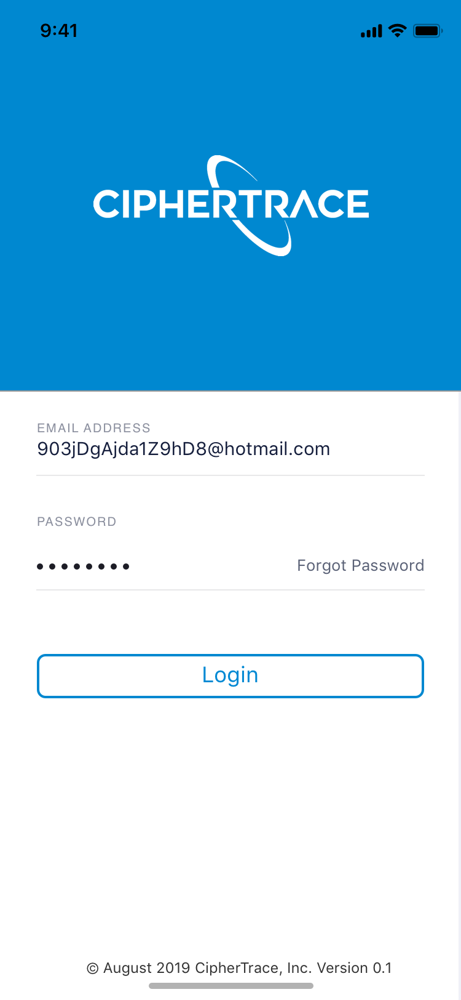
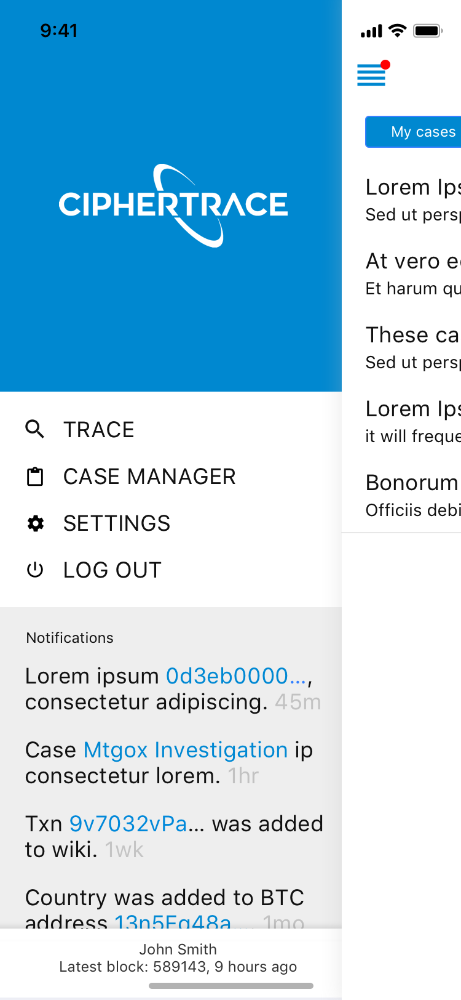
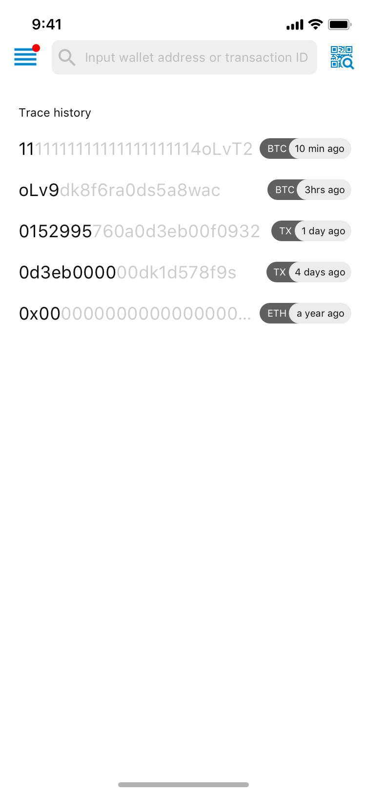
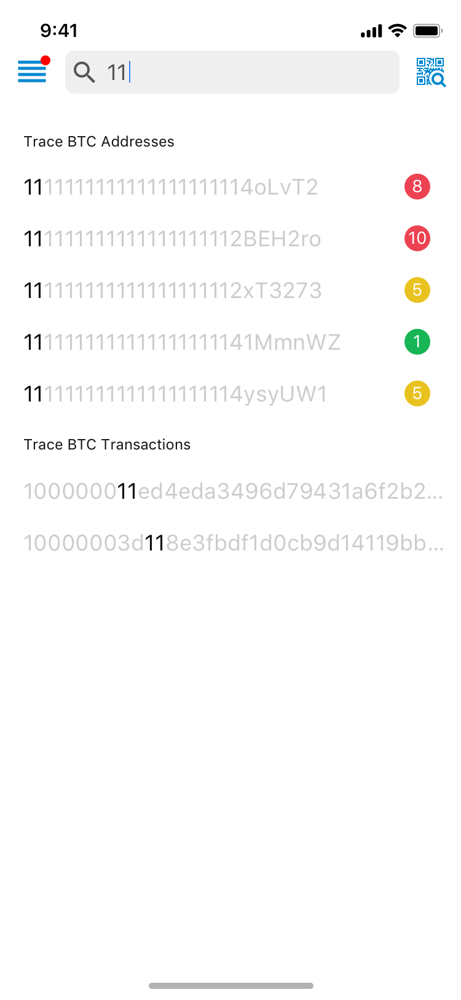
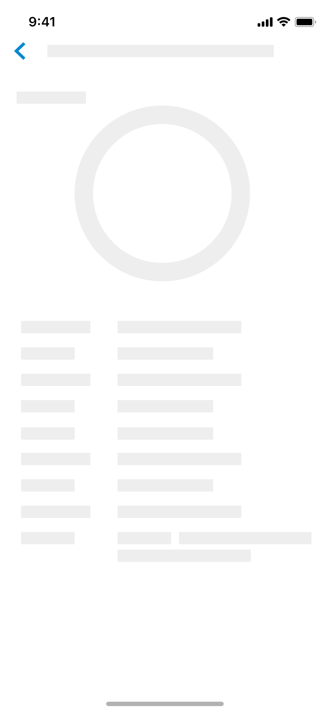
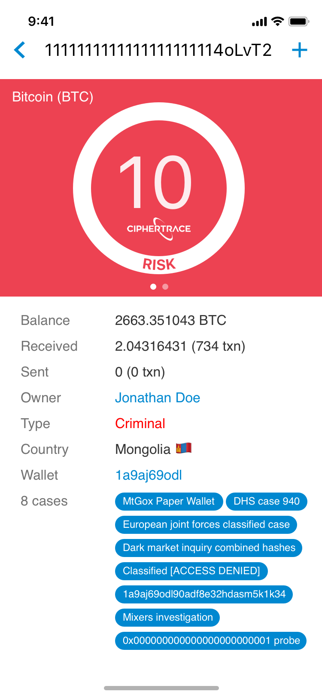
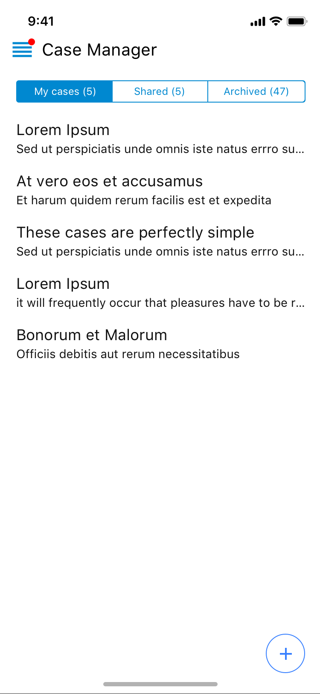
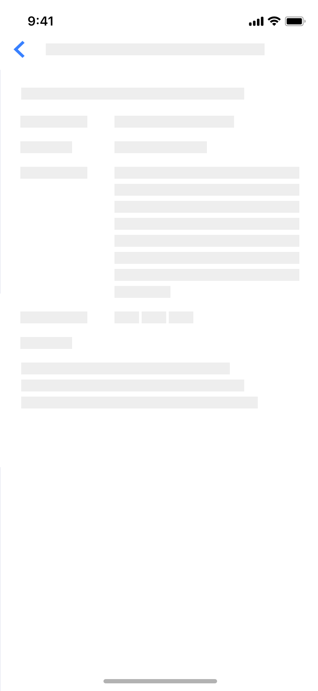
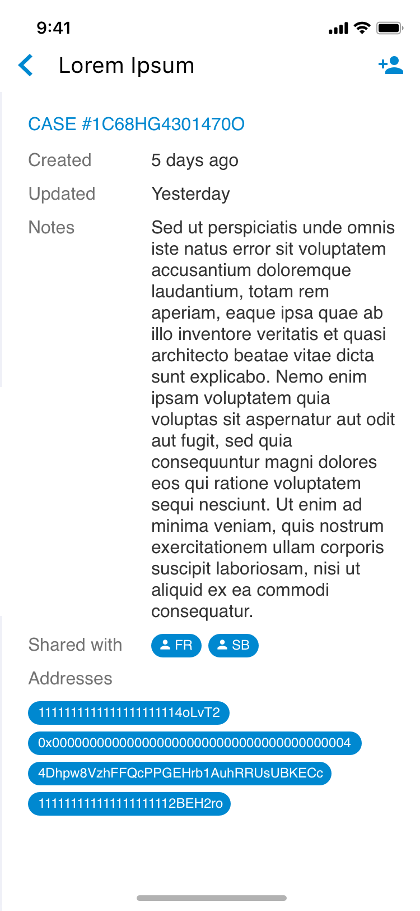

Design mockups for a mobile application that would serve as a simplified version of CipherTrace web application. The target audience of the app — investigators in the field, who should be able to share cases, risky addresses, and suspicious transactions with analysts at headquarters for a additional research and monitoring.
CipherTrace mobile app design
June 2019
Gallery

Login view
Burger menu with notifications
Initial search view with search history
Search type-ahead
Address trace optimistic rendering
Address trace
Cases list view
Case record view optimistic rendering
Case record view optimistic renderingAlternative version — icons as labels
Alternative version — record views as a story
Role: Product designer